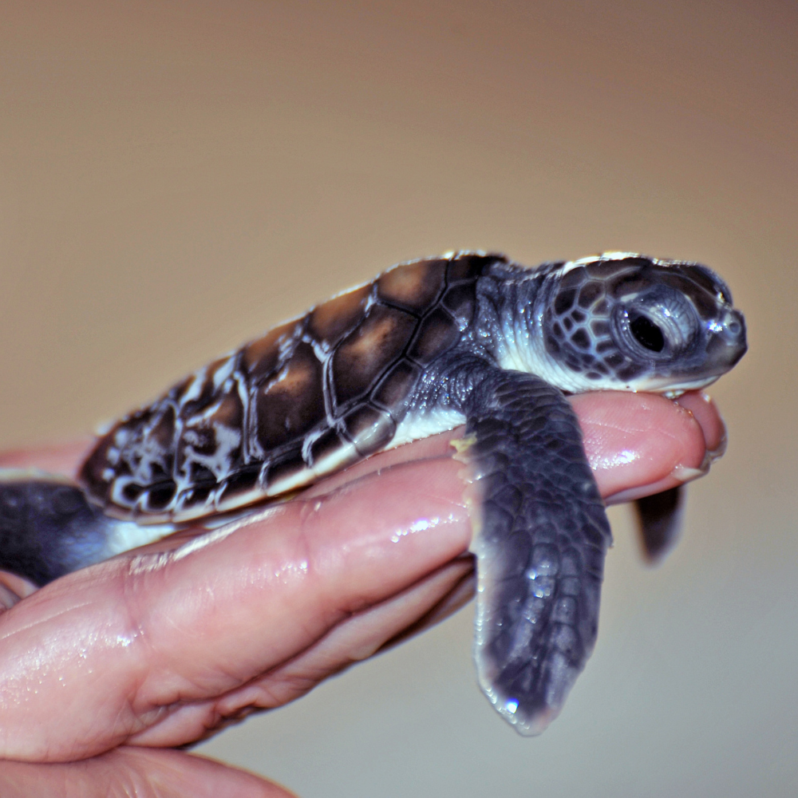
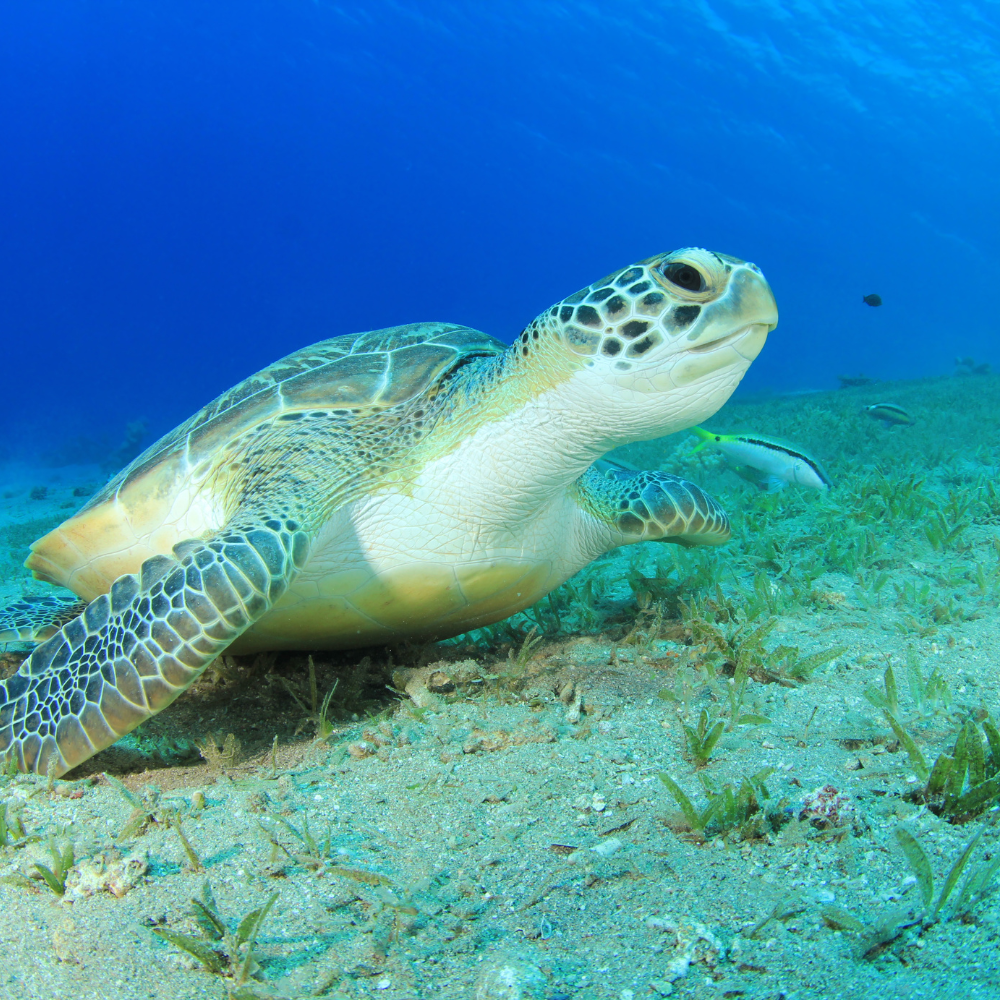
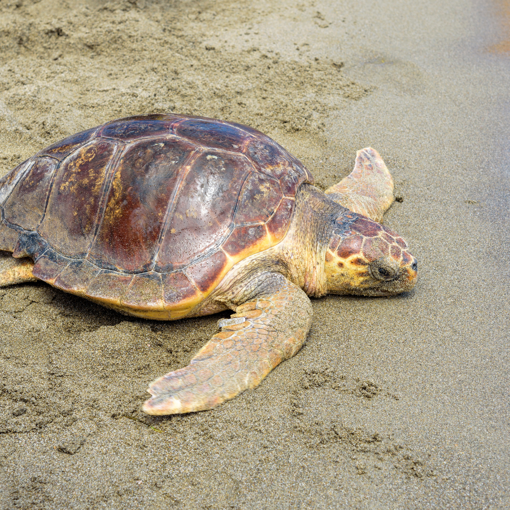
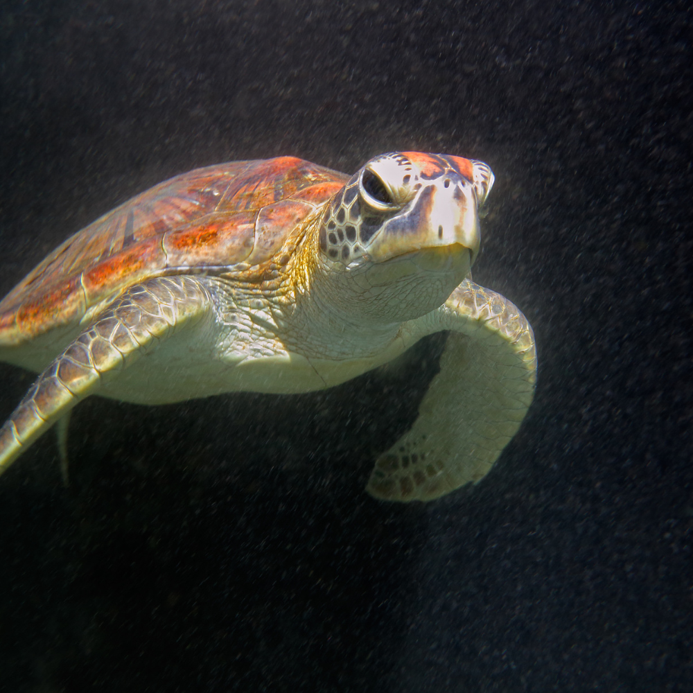
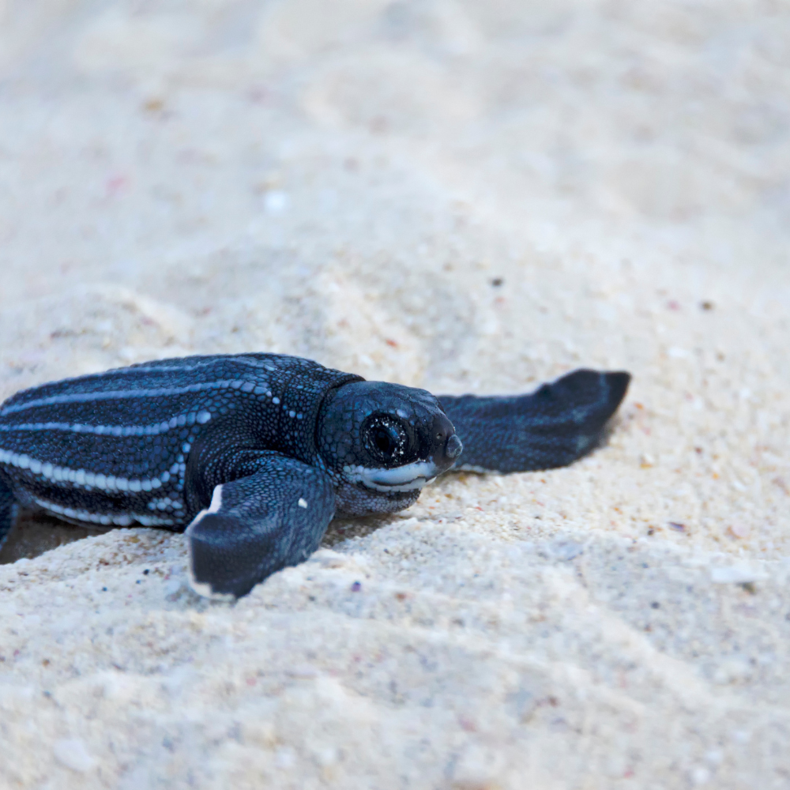

This is the most common species of sea turtle in Sri Lanka, with nesting sites all around the island. Olive Ridley turtles are small to medium-sized, typically measuring around 60-70 cm in length and weighing between 35-50 kg. They have a distinctive heart-shaped shell and are named for their olive green coloration. Olive Ridley turtles are known for their synchronized nesting behavior, where hundreds of females will come ashore to nest at the same time, creating large nesting aggregations or "arribadas". These turtles are listed as vulnerable on the IUCN Red List.
This species is the most common sea turtle found in Sri Lanka and can be seen on most beaches throughout the country. Some of the best places to see them include the beaches of Rekawa, Kalamatiya, and Kosgoda.
This is the second most common species of sea turtle in Sri Lanka, with nesting sites on many of the country's beaches. Green turtles are medium to large-sized, typically measuring around 90-100 cm in length and weighing between 70-200 kg. They have a smooth and oval-shaped shell and are named for their green coloration. Green turtles are known for their herbivorous diet, feeding mainly on seagrasses and algae. These turtles are listed as endangered on the IUCN Red List.
This species can also be found on many beaches in Sri Lanka, although they are less common than Olive Ridley Sea Turtles. Some of the best places to see them include the beaches of Hikkaduwa, Unawatuna, and Mirissa.
This species is less common in Sri Lanka than the Olive Ridley and Green Sea Turtles. Loggerheads are medium to large-sized, typically measuring around 80-90 cm in length and weighing between 115-180 kg. They have a large and heavy head and are named for their powerful jaws. Loggerheads are known for their wide-ranging migrations, and some individuals have been known to travel thousands of kilometers between nesting and feeding areas. These turtles are listed as vulnerable on the IUCN Red List.
This species is less common in Sri Lanka than the Olive Ridley and Green Sea Turtles, but they can still be found nesting on some beaches in the country. Some of the best places to see them include the beaches of Trincomalee and Pigeon Island.
This species is rare in Sri Lanka, but they can occasionally be found nesting on beaches in the southern part of the country. Hawksbills are small to medium-sized, typically measuring around 60-90 cm in length and weighing between 35-70 kg. They have a narrow and pointed beak and are named for their pointed and serrated shell. Hawksbills are known for their beautiful shell, which has been highly prized for centuries in the production of decorative items like jewelry and tortoiseshell combs. These turtles are listed as critically endangered on the IUCN Red List.
This species is rare in Sri Lanka, but they can occasionally be found nesting on beaches in the southern part of the country. Some of the best places to see them include the beaches of Bentota and Tangalle.
This is the largest species of sea turtle and they are extremely rare in Sri Lanka. Leatherbacks can weigh up to 900 kg and can reach lengths of up to 2 meters. They have a soft and rubbery shell, which is why they are called "leatherbacks." Leatherbacks are known for their deep diving ability, and they can dive to depths of over 1000 meters in search of their favorite food, jellyfish. These turtles are listed as vulnerable on the IUCN Red List.
This is the largest species of sea turtle and they are extremely rare in Sri Lanka. While it is possible to see a Leatherback Sea Turtle in Sri Lanka, sightings are very rare.
| Turtle Name | Places Found | Image |
|---|---|---|
| Olive Ridley Sea Turtle |
Beaches of,
|
 |
| Green Sea Turtle |
Beaches of,
|
 |
| Loggerhead Sea Turtle |
Beaches of,
|
 |
| Hawksbill Sea Turtle |
Beaches of,
|
 |
| Leatherback Sea Turtle |
Very rare to be sighted.
Beaches of,
|
 |